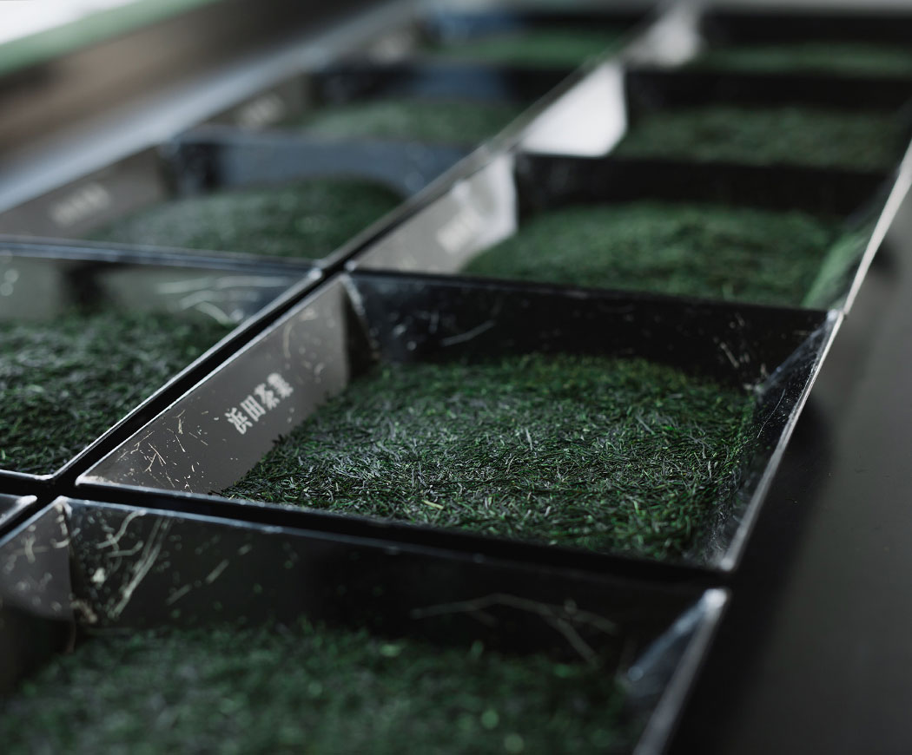
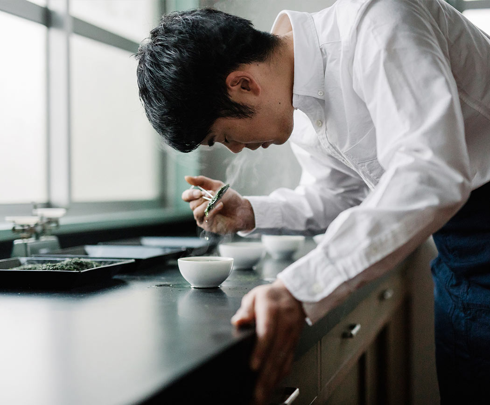
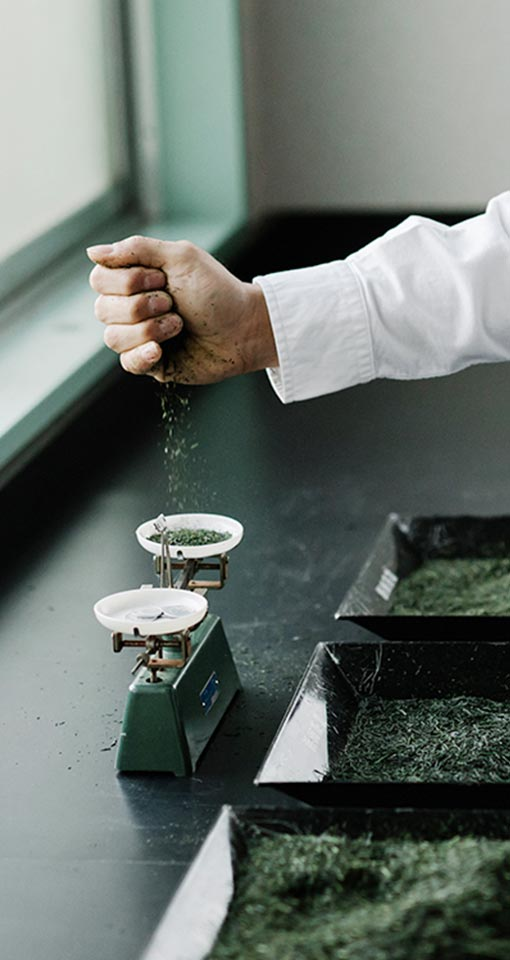
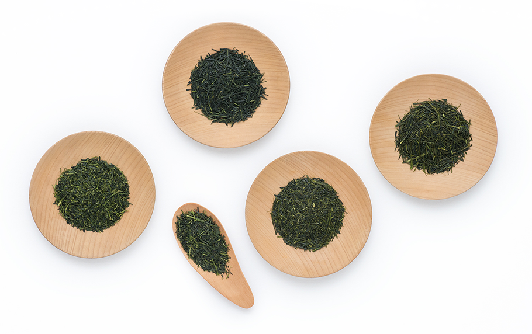
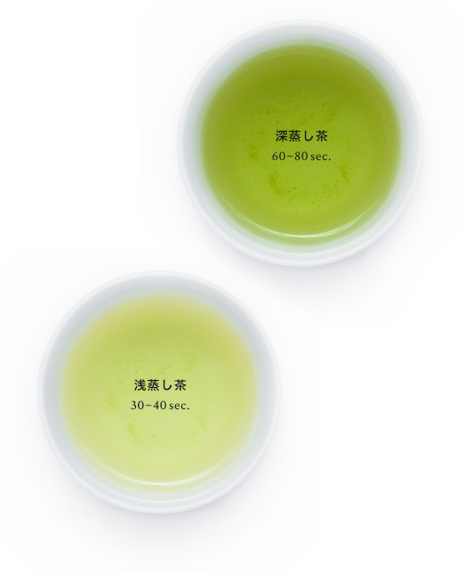
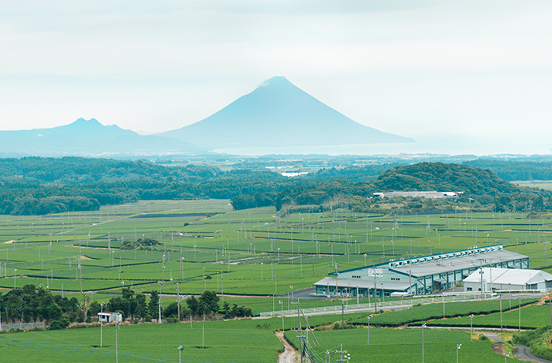
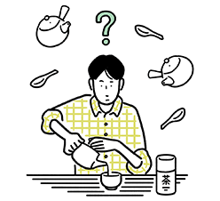
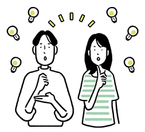

About the story

美的味道秘密，并且是
位于中心组中
每天经历的大部分茶都是所谓的
“混合茶”，有些混合了不同的茶叶。
但它也常常享受只在所谓的“单品”，
在世界茶叶咖啡品种单一豆，
采取和谐共进了最好每个品种的，
产生更丰富的味道和香气一般是的。
“混合茶”，有些混合了不同的茶叶。
但它也常常享受只在所谓的“单品”，
在世界茶叶咖啡品种单一豆，
采取和谐共进了最好每个品种的，
产生更丰富的味道和香气一般是的。
茶工匠
"茶大师"
 
帝人是一个创造茶的工匠。根据季节和收获日期，
茶叶的味道会有微妙的变化。由于存在味道没有变
化贯穿全年，眼睛，调整鼻，舌，评估茶叶或般的
质感，选择和品种的制剂特征。将它定制为茶叶，
充分利用茶叶。全国约有700个茶道。由于决定茶
的风味是重要的作用，因此决定了辨别眼睛的技能
的阶段。只有13人获得了十个最高级别的认证。我
在艰难的世界里继续完善这项工作。
茶叶的味道会有微妙的变化。由于存在味道没有变
化贯穿全年，眼睛，调整鼻，舌，评估茶叶或般的
质感，选择和品种的制剂特征。将它定制为茶叶，
充分利用茶叶。全国约有700个茶道。由于决定茶
的风味是重要的作用，因此决定了辨别眼睛的技能
的阶段。只有13人获得了十个最高级别的认证。我
在艰难的世界里继续完善这项工作。
样品展示
领带后的茶叶再次确认是否混
有异物。它将在之后包装并发货。
Production place

真正感兴趣的茶第1部分
日本最好的茶叶生产
在九州南部，温度差异强烈，雾气
深的气候适合茶的种植。实际上它
是日本自治市最高产的绿茶生产地。
（甚至在县内，鹿儿岛县是静冈县
旁边的第2大产量）
知览茶开始奖励农业，林业和渔业
奖和全国茶叶展销会日本农业中心
主席奖的部长，曾荣获各种奖项，
有品质和品味的成长性评价。
深的气候适合茶的种植。实际上它
是日本自治市最高产的绿茶生产地。
（甚至在县内，鹿儿岛县是静冈县
旁边的第2大产量）
知览茶开始奖励农业，林业和渔业
奖和全国茶叶展销会日本农业中心
主席奖的部长，曾荣获各种奖项，
有品质和品味的成长性评价。

真正感兴趣的茶第2部分
丰富的品种
据了解，我们利用火山灰的积累利用
了肥沃的土地，并与其他来源相比，
种植了许多品种的茶。
混合（混合）的范围也通过独特的丰
富茶叶扩大，您可以根据每个客户的
喜好提供茶
了肥沃的土地，并与其他来源相比，
种植了许多品种的茶。
混合（混合）的范围也通过独特的丰
富茶叶扩大，您可以根据每个客户的
喜好提供茶

真正感兴趣的茶第3部分
彻底蒸“深蒸茶”
大多数茶道都是名为“深蒸茶”的茶。
在采茶后蒸的过程中，一般茶蒸煮时
间为30秒至40秒，知览茶是蒸约2倍
60秒80秒。通过蒸汽长时间抑制蒸汽
，并且出现醇厚的丰富度。另外，由
于叶子变得更细，在提取时，深绿色
是美丽的，它适合作为用水提取的茶。
在采茶后蒸的过程中，一般茶蒸煮时
间为30秒至40秒，知览茶是蒸约2倍
60秒80秒。通过蒸汽长时间抑制蒸汽
，并且出现醇厚的丰富度。另外，由
于叶子变得更细，在提取时，深绿色
是美丽的，它适合作为用水提取的茶。

真4件茶道
现在，最重要的生产区域
在茶道农民中，三十多岁的年轻一代双
手合作，正致力于进一步改进和发展知
识茶。从生产到计划和销售，仔细。茶
业的传承进展顺利，有了工会的支持，
整个九州南部城市都在不断进行耕作，
稳定的茶叶生产。
手合作，正致力于进一步改进和发展知
识茶。从生产到计划和销售，仔细。茶
业的传承进展顺利，有了工会的支持，
整个九州南部城市都在不断进行耕作，
稳定的茶叶生产。
喝茶方式
Way of drinking tea
你知道的越多，茶的味道就越深。想通过寻找享受的方式了解
更多关于茶的信息，更不用说正确的饮酒方式了吗？
你多大了?
茶的种类

了解基础知识并了解你的偏好
任何进行酿造讲座
你可以随时喝美味
正确的存储方法

我本能的想教人
茶琐事
Login or register